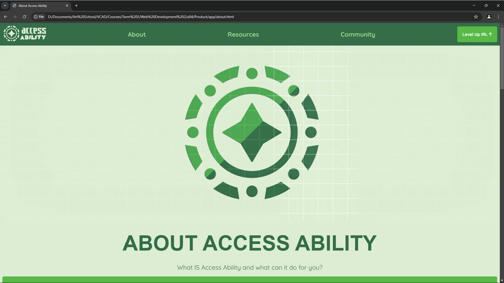

Overview
Project Name: accessAbility
accessAbility is a visionary project designed to bridge the gap between technology, design, and human experience—fostering environments that are welcoming and accessible to everyone, regardless of their abilities.
Project Name: accessAbility
accessAbility is a visionary project designed to bridge the gap between technology, design, and human experience—fostering environments that are welcoming and accessible to everyone, regardless of their abilities.
Description
Project Name: accessAbility
accessAbility is a visionary project designed to bridge the gap between technology, design, and human experience—fostering environments that are welcoming and accessible to everyone, regardless of their abilities.
Rationale
Many individuals, especially those facing mental health challenges or diverse accessibility needs, struggle to find and use resources that are intuitive, welcoming, and stigma-free. They may encounter:
accessAbility, aims to streamline access to mental health resources and foster a supportive community. By combining inclusive design, clear communication, and broad outreach, we can remove barriers and empower people to seek help with confidence and dignity.
Mobile app:
Logo Symbolism
The accessAbility logo is designed with a screw and gear, symbolizing both customization and user empowerment.
Customization & Personal Growth
-
Just like a well-designed mechanism, accessAbility allows users to adjust, refine, and tailor their experience in a way that works for them.
- - The app is more than a static tool—it's a personalized system for neurohacking, brain training, and mental wellness.
- - Whether adjusting cognitive training exercises, optimizing focus strategies, or accessing mental health resources, every interaction is designed to empower, not dictate.
- - The screw-and-gear metaphor also extends to how users build their own journey, modifying their interface, tracking progress, and developing mental resilience over time.
Colour Palette
Problem-Solving via Color
Typography
ITC Avante Garde Gothic
Lowering Barriers to Help:
The design choices—rooted in color psychology, inclusive typography, and accessible layout—directly address the challenges users face in finding mental health support. By presenting a consistent, welcoming interface across an app, website, social media, printed materials, and in-clinic resources, we create a holistic ecosystem where no one feels lost or excluded.
accessAbility is not just a design—it's a mission. By combining thoughtful aesthetics, robust accessibility, and a warm, inclusive tone, we're setting a new standard for mental health support platforms. This is more than code or color; it's a human-centered approach that empowers every user to seek help on their own terms.